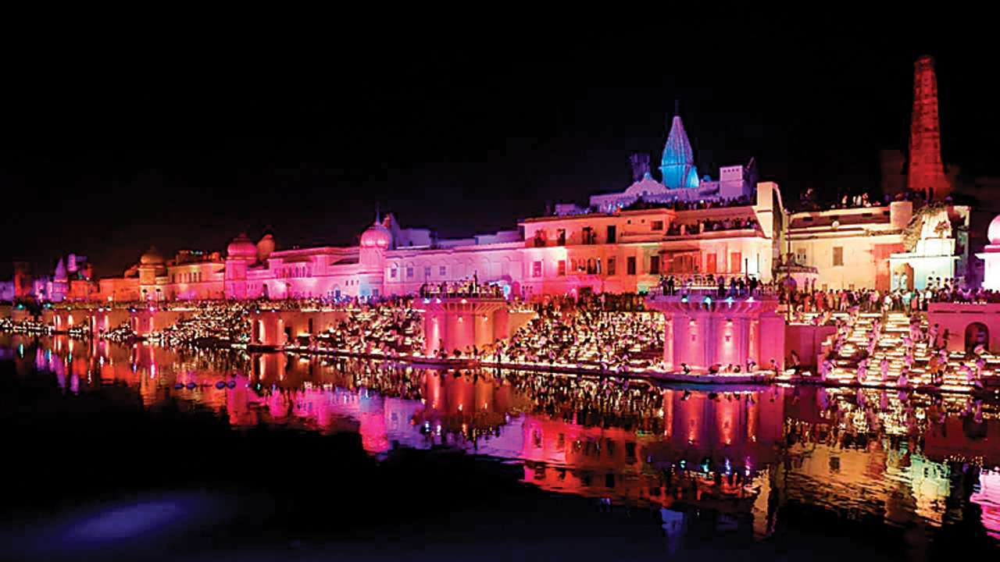
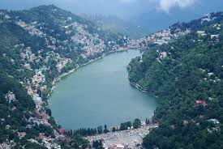

Nauka Vihar Gorakhpur || places to travel in gorakhpur || nauka vihar || Gorakhpur || sumitra nandan pant || yogi adityanath || Gorakhnath mandir || gorakhnath temple ||Gorakhpur railway station || up cm yogi adityanath || water park in gorakhpur || water sports in gorakhpur || ram garh taal || Ramgarh tal || neer nikunj water park || sumitra nandan pant
Nauka vihar is located in Buddha Vihar road,Ramgarh tal, Gorakhpur,Uttar Pradesh-273010 You can enjoy water laser show in the evening,instrumental song etc. It is couple friendly place. If you are patriotic type you will surely feel proud when you see Uttar pradesh highest flag(75 feet) standin right at.
GORAKHNATH BABA
KUSHINAGAR
LARGEST STATION
MALLS
NEAREST TOURIST PLACEs:)
AYODHYA
Owing to the belief as the birthplace of Rama, Ayodhya (Awadh) has been regarded as one of the seven most important pilgrimage sites (Saptapuri) for Hindus. It is believed that the birth spot of Rama was marked by a temple
VARANASI
Varanasi is a city in the northern Indian state of Uttar Pradesh dating to the 11th century B.C. Regarded as the spiritual capital of India, the city draws Hindu pilgrims who bathe in the Ganges River’s sacred waters and perform funeral rites. Along the city's winding streets are some 2,000 temples, including Kashi Vishwanath, the “Golden Temple,” dedicated to the Hindu god Shiva.
KATHMANDU
Kathmandu, Nepal's capital, is set in a valley surrounded by the Himalayan mountains. At the heart of the old city’s mazelike alleys is Durbar Square, which becomes frenetic during Indra Jatra, a religious festival featuring masked dances. Many of the city's historic sites were damaged or destroyed by a 2015 earthquake. Durbar Square's palace, Hanuman Dhoka, and Kasthamandap, a wooden Hindu temple, are being rebuilt.
POKHRA
Pokhara is a city on Phewa Lake, in central Nepal. It’s known as a gateway to the Annapurna Circuit, a popular trail in the Himalayas. Tal Barahi Temple, a 2-story pagoda, sits on an island in the lake. On the eastern shore, the Lakeside district has yoga centers and restaurants. In the city’s south, the International Mountain Museum has exhibits on the history of mountaineering and the people of the Himalaya
NANITAL
Nainital is a Himalayan resort town in the Kumaon region of India’s Uttarakhand state, at an elevation of roughly 2,000m. Formerly a British hill station, it’s set around Nainital Lake, a popular boating site with Naina Devi Hindu Temple on its north shore. A cable car runs to Snow View observation point (at 2,270m), with vistas over the town and mountains including Nanda Devi, Uttarakhand’s highest peak
DEOGHAR
Deoghar is a holy city beside the Mayurakshi River, in the east Indian state of Jharkhand. The ancient Baba Baidyanath Temple complex is a significant Hindu pilgrimage site. Nearby, Shiv Ganga is a sacred pool where devotees of Shiva bathe. There is a shrine to Krishna in the ornate, stone-carved Naulakha Mandir temple. Northeast of town, Harila Jori is the site of a whitewashed Shiva temple and a sacred water tank
 Kathmandu, Nepal's capital, is set in a valley surrounded by the Himalayan mountains. At the heart of the old city’s mazelike alleys is Durbar Square, which becomes frenetic during Indra Jatra, a religious festival featuring masked dances. Many of the city's historic sites were damaged or destroyed by a 2015 earthquake. Durbar Square's palace, Hanuman Dhoka, and Kasthamandap, a wooden Hindu temple, are being rebuilt.
Kathmandu, Nepal's capital, is set in a valley surrounded by the Himalayan mountains. At the heart of the old city’s mazelike alleys is Durbar Square, which becomes frenetic during Indra Jatra, a religious festival featuring masked dances. Many of the city's historic sites were damaged or destroyed by a 2015 earthquake. Durbar Square's palace, Hanuman Dhoka, and Kasthamandap, a wooden Hindu temple, are being rebuilt.